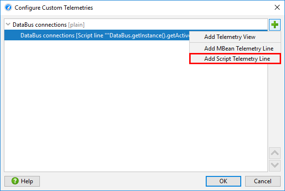
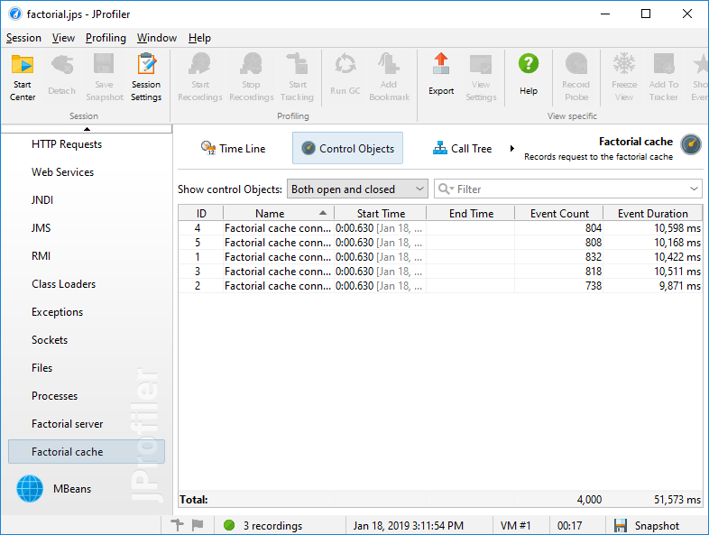

To develop a custom probe for JProfiler, you should be aware of some basic concepts and terminology. The common basis of all of JProfiler's probes is that they intercept specific methods and use the intercepted method parameters and other data sources to build a string with interesting information that you would want to see in the JProfiler UI.
The initial problem when defining a probe is how to specify the intercepted methods and get an environment where you can use the method parameters and other relevant objects for building the string. In JProfiler, there are 3 different ways to do that:
The next question is: what should JProfiler do with the string that you have created? There are two different strategies available: payload creation or call tree splitting.
The string that is built by a probe can be used to create a probe event. The event has a description that is set to that string, a duration that is equal to the invocation time of the intercepted method, as well as an associated call stack. At their corresponding call stacks, probe descriptions and timings are cumulated and saved as payloads into the call tree. While events are consolidated after a certain maximum number, the cumulated payloads in the call tree show the total numbers for the entire recording period. If both CPU data and your probe are being recorded, the probe call tree view will show the merged call stacks with the payload strings as leaf nodes and the CPU call tree view will contain annotated links into the probe call tree view.
Just like for CPU data, payloads can be shown in a call tree or in a hot spots view. The hot spots show which payloads are responsible for most of the expended time and the back traces show you which parts of your code are responsible for creating these payloads. In order to get a good list of hot spots, the payload strings should not contain any unique IDs or timestamps, because if every payload string is different, there will be no cumulation and no clear distribution of hot spots. For example, in the case of a prepared JDBC statement, the parameters should not be included in the payload string.
Script probes create payloads automatically from the return value of the configured script. Injected probes are
similar, they return the payload description from an interception handler method annotated with
PayloadInterception either as a string or as a Payload object for advanced
functionality. Embedded probes, on the other hand, create payloads by calling Payload.exit
with the payload description as an argument, where the time between Payload.enter and
Payload.exit is recorded as the probe event duration.
Payload creation is most useful if you're recording calls to services that happen at different call sites. A typical example is a database driver where the payload string is some form of query string or command. The probe takes the perspective of the call site, where the work that is measured is performed by another software component.
The probe can also take the perspective of the execution site. In that case, it is not important how the intercepted method is called, but rather what method calls are executed after it. A typical example is a probe for a servlet container where the extracted string is a URL.
More important than creating payloads is now the ability to split the call tree for each distinct string that is built by the probe. For each such string, a splitting node will be inserted into the call tree that contains the cumulated call tree of all corresponding invocations. Where otherwise there would be just one cumulated call tree, now there is a set of splitting nodes segmenting the call tree into different parts that can be analyzed separately.
Multiple probes can produce nested splits, a single probe by default produces only one split level, unless is has been configured as reentrant which is not supported for script probes.
In the JProfiler UI, call tree splitting is not bundled with the script probe feature, but is a
separate featurecalled "Split methods". They just split the call
tree without creating payloads, so no probe view with name and description is required. Injected probes return
the split string from an interception handler method annotated with SplitInterception, while
embedded probes call Split.enter with the split string.
Custom probes have two default telemetries: The event frequency and the average event duration. Injected and embedded probes support additional telemetries that are created with annotated methods in the probe configuration classes. In the JProfiler UI, script telemetries are independent from the script probe feature and are found in the "Telemetries" section, under the Configure Telemetries button in the tool bar.

Telemetry methods are polled once per second. In the Telemetry annotation, you can configure the unit
and a scale factor. With the line attribute, multiple telemetries can be combined into a single
telemetry view. With the stacked attribute of the TelemetryFormat you can make the
lines additive and show them as a stacked line graph. The telemetry-related APIs in the embedded and injected
probes are equivalent but only applicable for their respective probe types.
Sometimes it is interesting to tie probe events to associated long-lived objects that are called "control objects" in JProfiler. For example, in a database probe, that role is taken by the physical connection that executes a query. Such control objects can be opened and closed with the embedded and the injected probe APIs which generates corresponding events in the probe events view. When a probe event is created, the control object can be specified, so that the probe event contributes to the statistics that is shown in the "Control objects" view of the probe.

Control objects have display names that have to be specified when they are opened. If a new control object is used when creating a probe event, the probe has to provide a name resolver in its configuration.
In addition, probes can define custom event types via an enum class. When the probe event is created, one of those types can be specified and shows up in the events view where you can can filter for single event types. More importantly, the time line view of the probe that shows control objects as lines on a time axis is colored according to the event type. For a probe without custom event types, the coloring shows the idle state where no events are recorded and the default event state for the duration of probe events. With custom types, you can differentiate states, for example "read" and "write".
Like for all probes, custom probes do not record data by default, but you have to enable and disable recording as necessary. While you can use the manual start/stop action in the probe view, it is often necessary to switch on probe recording at the beginning. Because JProfiler does not know about custom probes in advance, the recording profiles have a Custom probes check box that applies to all custom probes.
Similarly, you can choose All custom probes for the trigger actions that start and stop probe recording.
For programmatic recording, you can call
Controller.startProbeRecording(Controller.PROBE_NAME_ALL_CUSTOM, ProbeRecordingOptions.EVENTS)
to record all custom probes, or pass the class name of the probe in order to be more specific.